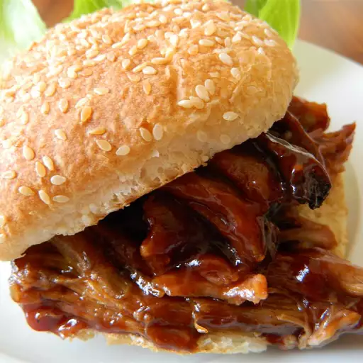

Pulled Pork
Ingredients
- 1 (2 1/2 pound) boneless pork loin roast
- water as needed
- 1 (18 ounce) bottle barbeque sauce
- 8 large sandwich buns, split
Steps
- Place pork in a slow cooker and add enough water to cover the bottom of the slow cooker.
- Cook on Low for 7 hours. Transfer pork to a bowl and shred with two forks. Return pork to slow cooker and stir in barbeque sauce. Continue to cook on Low for 45 minutes to 1 hour.
- Spoon a generous amount of pork into each roll to serve.